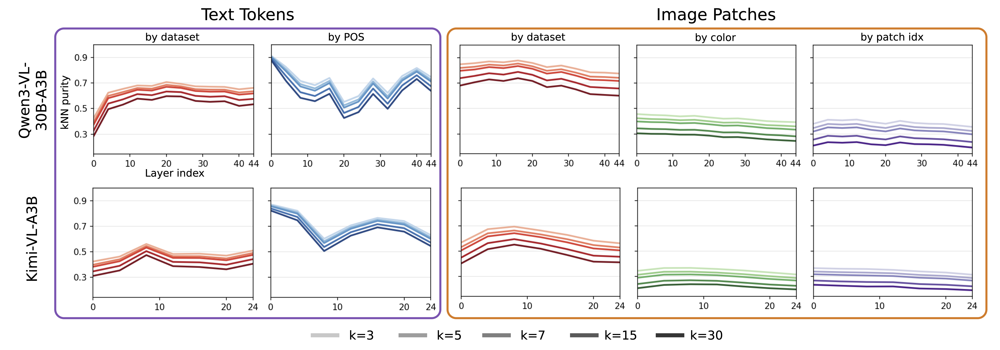

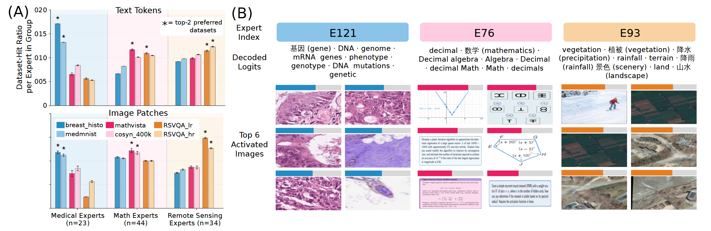

Harnessing Domain Specialists in Multimodal Mixture-of-Experts for Efficient Adaptation
In this post, we’ll take a closer look at the internal structure of multimodal Mixture-of-Experts (MoE) models. We’ll start by asking whether their experts naturally organize themselves around different modalities, semantic domains, and even finer-grained visual concepts. We’ll then look at how that structure can be uncovered from the model itself, without needing to probe it with domain-specific data. Finally, we’ll show how this emergent modularity can be put to practical use, using it to adapt multimodal MoEs more efficiently by updating the experts that matter most for a new domain.
Emergent Structure in Mixture-of-Experts VLMs
Let's start by asking a simple question: Do pre-trained multimodal MoEs develop meaningful internal structure? To explore this, we look at expert specialization at three increasingly fine-grained levels: first across modalities, then across semantic domains, and finally across individual visual concepts. We find that this organization appears surprisingly consistently, suggesting that experts are far from interchangeable. We close this section by introducing ExpertLens, a way to uncover this structure directly from the model’s pretrained weights, without needing any domain-specific data.
Specialization by modality
We'll start with the most basic distinction in a multimodal model: vision versus language. Since the same MoE layers process both image patches and text tokens, we asked whether individual experts treat these two modalities differently, or whether they are used more or less interchangeably.
To test this, we can look at how often each expert was activated by image patches versus text tokens when an equal number of both is fed to the model. For Qwen3-VL-30B-A3B, many experts show a clear preference for one modality or the other. In the figure below, each vertical bar represents an expert, with orange showing image-patch activations and purple showing text-token activations. Across layers, experts are rarely perfectly balanced. Many lean strongly toward either vision or language.

This structure is particularly visible when we consider all experts at once (B). Instead of a single unimodal peak for modality preference, the distribution is visibly bimodal: one group of experts is strongly image-oriented, while another peak appears to be more text-oriented. This bimodality is confirmed with a Hartigan dip of 0.0136 (p < 0.001). In other words, even though the model was not explicitly designed with separate "vision experts" and "language experts", that division begins to emerge naturally during pre-training.
(The above figures show Qwen3-VL-30B-A3B. We find Gemma-4-26B-A4B is similarly bimodal, while Kimi-VL-A3B is more nearly unimodal, likely due to its smaller expert pool.)
Specialization by domain
So far we have seen that experts are not used interchangeably across vision and language. We next ask whether this specialization extends within each modality: do multimodal MoEs also organize their representations and experts around different semantic domains?
We study this using datasets from three very different settings: medical imaging, mathematical reasoning, and remote sensing. We start by looking at the token representations that drive routing. When we reduce the dimensionality of image-patch and text-token activations from these datasets through a t-SNE projection, we see some clear, interesting patterns. First, image representations create much tighter domain-specific clusters, while text representations are generally more diffuse. Further, we can see that datasets from the same domain often neighbor each other in the t-SNE projection. This suggests the visible organization reflects broader semantic structure instead of individual dataset identity. Below we include an interactive projection from Layer 18 of Qwen3-VL-30B-A3B, but we can find similar latent structure in other layers of Qwen3-VL-30B-A3B and other multimodal MoEs.

To characterize this organization more systematically, we can measure the local structure of the representation space using nearest-neighbor purity. Basically, we want to see whether grouping by semantic category, versus low-level image or text statistics, results in a better explanation of the organization of intermediate image-patch and text-token activations.
For image patches, representations are organized much more strongly by dataset than by simple visual properties such as average color or spatial patch position. On the other hand, we found that text tokens' representations align more strongly with linguistic structure, such as part of speech, than with dataset identity.

Together, these results point to a particularly strong domain-level organization in the visual representations of multimodal MoEs.
Specialization by object semantics
The domain-level results suggest that multimodal MoEs are organized around high-level visual structure. Now we can ask whether this specialization goes one step further: within a domain, are experts also sensitive to object-level semantics? In other words, do semantically related objects tend to recruit similar experts?
To isolate semantics from dataset effects, we ran the analysis entirely within TinyImageNet. For each object class, we tracked which experts were consistently activated by its image patches. We then measured how much those expert sets overlapped between pairs of classes. We represent the degree of "expert overlap" betwee object classes as Z(a,b).
Across all class pairs, we can see a clear pattern: the farther apart two classes are semantically, the less their expert sets overlap. (A) shows this relationship over all TinyImageNet class pairs, with "semantic distance" represented by WordNet Wu-Palmer distance. The larger the Wu-Palmer distance between two classes, the fewer the number of experts they both recruit.

(B) gives a more concrete view of the same pattern. We consider ten TinyImageNet classes grouped into five semantically related pairs, shown on the right. Each colored solid line corresponds to one related pair, such as a golden retriever and tabby or train and freight car, and shows how strongly their expert sets overlap across layers. The gray dashed line is the baseline overlap for unrelated class pairs, so whenever a colored line sits above it, that semantic pair is recruiting more similar experts than we would expect for unrelated objects. Most pairs remain well above this baseline.
What is particularly surprising is that this is not limited to visually similar pairings. Trains and freight cars share obvious visual structure, but golden retrievers and tabbies, or sea slugs and jellyfish, look very different and still recruit overlapping experts.
Zooming back out, these results suggest that multimodal MoEs develop strong internal structure that spans modality preferences, distinct domain specialization, and sensitivity to finer-grained object semantics.
ExpertLens
So far, we’ve found specialization by looking at how experts respond to data. But if we want to actually use this structure for adaptation, it would be much more useful to identify the relevant experts from the pretrained model itself, without first needing a representative dataset from all the domains we might want to adapt to.
This is the idea behind our method, ExpertLens. ExpertLens recovers expert semantics directly from pretrained weights by decoding router weights into semantically meaningful vocabulary tokens, a la the logit lens. We illustrate our method in the animation below.
For a given expert, we take its router weight and pass it through the model’s language-model head. This gives us a ranked list of vocabulary tokens associated with that expert. A math expert, for example, might decode to words like algebra, equation, or Euler; a medical expert might decode to terms related to DNA or patient. We then use those decoded tokens to decide whether an expert is associated with a target domain. The nice part is that this does not require any domain examples. ExpertLens reads the specialization directly from the pretrained model weights.
Now we've identified a set of experts that look domain-specialized from their weights, but do they actually behave that way on real data? To find out, we group the experts that ExpertLens labels as medical, math, or remote sensing specialists and measure how often each group activates on datasets from those domains.

We find medical experts are preferentially activated by medical data, math experts by math data, and remote sensing experts by remote sensing data, with the clearest alignment on image patches. In other words, the semantic preferences recovered from the weights line up closely with the experts’ actual routing behavior.